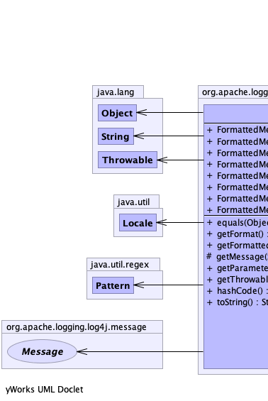
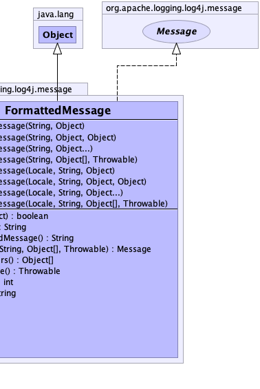

public class FormattedMessage extends java.lang.Object implements Message
|  |  |
| Constructor and Description |
|---|
FormattedMessage(java.util.Locale locale,
java.lang.String messagePattern,
java.lang.Object... arguments)
Constructs with a locale, a pattern and a parameter array.
|
FormattedMessage(java.util.Locale locale,
java.lang.String messagePattern,
java.lang.Object arg)
Constructs with a locale, a pattern and a single parameter.
|
FormattedMessage(java.util.Locale locale,
java.lang.String messagePattern,
java.lang.Object[] arguments,
java.lang.Throwable throwable)
Constructs with a locale, a pattern, a parameter array, and a throwable.
|
FormattedMessage(java.util.Locale locale,
java.lang.String messagePattern,
java.lang.Object arg1,
java.lang.Object arg2)
Constructs with a locale, a pattern and two parameters.
|
FormattedMessage(java.lang.String messagePattern,
java.lang.Object... arguments)
Constructs with a pattern and a parameter array.
|
FormattedMessage(java.lang.String messagePattern,
java.lang.Object arg)
Constructs with a pattern and a single parameter.
|
FormattedMessage(java.lang.String messagePattern,
java.lang.Object[] arguments,
java.lang.Throwable throwable)
Constructs with a pattern, a parameter array, and a throwable.
|
FormattedMessage(java.lang.String messagePattern,
java.lang.Object arg1,
java.lang.Object arg2)
Constructs with a pattern and two parameters.
|
| Modifier and Type | Method and Description |
|---|---|
boolean |
equals(java.lang.Object o) |
java.lang.String |
getFormat()
Gets the message pattern.
|
java.lang.String |
getFormattedMessage()
Gets the formatted message.
|
protected Message |
getMessage(java.lang.String msgPattern,
java.lang.Object[] args,
java.lang.Throwable aThrowable) |
java.lang.Object[] |
getParameters()
Gets the message parameters.
|
java.lang.Throwable |
getThrowable()
Gets the throwable, if any.
|
int |
hashCode() |
java.lang.String |
toString() |
public FormattedMessage(java.util.Locale locale,
java.lang.String messagePattern,
java.lang.Object arg)
locale - The localemessagePattern - The message pattern.arg - The parameter.public FormattedMessage(java.util.Locale locale,
java.lang.String messagePattern,
java.lang.Object arg1,
java.lang.Object arg2)
locale - The localemessagePattern - The message pattern.arg1 - The first parameter.arg2 - The second parameter.public FormattedMessage(java.util.Locale locale,
java.lang.String messagePattern,
java.lang.Object... arguments)
locale - The localemessagePattern - The message pattern.arguments - The parameter.public FormattedMessage(java.util.Locale locale,
java.lang.String messagePattern,
java.lang.Object[] arguments,
java.lang.Throwable throwable)
locale - The LocalemessagePattern - The message pattern.arguments - The parameter.throwable - The throwablepublic FormattedMessage(java.lang.String messagePattern,
java.lang.Object arg)
messagePattern - The message pattern.arg - The parameter.public FormattedMessage(java.lang.String messagePattern,
java.lang.Object arg1,
java.lang.Object arg2)
messagePattern - The message pattern.arg1 - The first parameter.arg2 - The second parameter.public FormattedMessage(java.lang.String messagePattern,
java.lang.Object... arguments)
messagePattern - The message pattern.arguments - The parameter.public FormattedMessage(java.lang.String messagePattern,
java.lang.Object[] arguments,
java.lang.Throwable throwable)
messagePattern - The message pattern.arguments - The parameter.throwable - The throwablepublic boolean equals(java.lang.Object o)
equals in class java.lang.Objectpublic java.lang.String getFormat()
public java.lang.String getFormattedMessage()
getFormattedMessage in interface Messageprotected Message getMessage(java.lang.String msgPattern, java.lang.Object[] args, java.lang.Throwable aThrowable)
public java.lang.Object[] getParameters()
getParameters in interface Messagepublic java.lang.Throwable getThrowable()
MessagegetThrowable in interface Messagepublic int hashCode()
hashCode in class java.lang.Objectpublic java.lang.String toString()
toString in class java.lang.Object